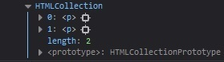
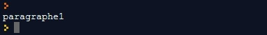
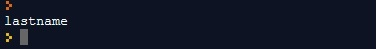
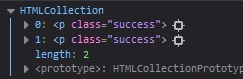
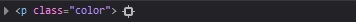
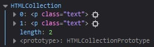

Objectifs
- Connaître les sélecteurs disponibles
- Sélectionner des éléments du DOM
Mise en situation
Comme nous l'avons évoqué précédemment, pour manipuler le DOM, nous aurons besoin de sélectionner ses éléments. Nous pourrons faire appel à des méthodes de l'interface Document. Nous allons voir ici l'ensemble de ces méthodes et leurs subtilités.
document.getElementsByTagName('p')
Cette méthode renvoie la liste des éléments du DOM portant le nom passé en paramètre. Nous l'utiliserons pour sélectionner directement des balises HTML.
element.item(0).name
La méthode item() renvoie un nœud spécifié dans un objet NodeList. Les nœuds sont triés comme ils apparaissent dans le code source, et l'index commence à 0. C'est-à-dire que cette méthode renvoie la valeur de l'attribut name dans la balise input.
Exemple
See the Pen Untitled by OpenSpirit (@OpenSpirit) on CodePen.
Nous obtenons une HTMLCollection, c'est-à-dire un tableau des éléments <p></p> présents dans le DOM.
document.getElementById('element')
Cette méthode renvoie l'élément du DOM qui possède l'ID #element. Nous l'utiliserons pour sélectionner un élément bien précis.
Exemple
See the Pen Untitled by OpenSpirit (@OpenSpirit) on CodePen.
L'élément sélectionné est bien la balise p portant l'ID #element.
Fondamental
Un identifiant doit être unique dans une page web. Si plusieurs éléments possèdent le même ID, la méthode retournera le premier élément trouvé.
See the Pen Untitled by OpenSpirit (@OpenSpirit) on CodePen.
.jpg)
L'élément sélectionné est le premier élément portant l'ID #element trouvé.
document.getElementsByName('element')
Cette méthode renvoie la liste des éléments du DOM portant l'attribut name passé en paramètre. Il nous sera particulièrement utile pour sélectionner des éléments de formulaire.
Exemple
See the Pen Untitled by OpenSpirit (@OpenSpirit) on CodePen.
Nous obtenons une HTMLCollection comportant les éléments ayant l'attribut name="lastname".
document.getElementsByClassName('success')
Cette méthode renvoie la liste des éléments du DOM ayant pour attribut class="success". Nous l'utiliserons pour sélectionner un ensemble d'éléments qui ne sont pas forcément les mêmes balises.
Exemple
See the Pen Untitled by OpenSpirit (@OpenSpirit) on CodePen.
Nous obtenons une HTMLCollection avec les deux éléments possédant la classe success.
document.querySelector('p.color')
Cette méthode renvoie le premier élément du DOM correspondant au sélecteur CSS p.color.
Exemple
See the Pen Untitled by OpenSpirit (@OpenSpirit) on CodePen.
Nous obtenons l'élément p ayant la classe color.
Il est également possible d'utiliser le sélecteur document.querySelectorAll() : ce dernier va retourner cette fois-ci tous les éléments qui correspondent au sélecteur CSS p.color.
Remarque
Les sélecteurs peuvent être enchaînés. Dans un soucis de performance, cette technique nous permettra de préciser notre recherche dans le DOM et ainsi d'éviter les recherches trop longues.
Attention
En termes de performances, nous préférerons l'utilisation des sélecteurs querySelector et getElementById, car, une fois l'élément trouvé, la recherche dans le DOM sera interrompue. En comparaison, getElementsByClassName ou getElementsByTagName devront parcourir l'ensemble du DOM afin de trouver tous les éléments correspondants. Toutefois, il est préférable d'utiliser QuerySelector car il permet de retourner le premier élément qui correspond à un ou plusieurs sélecteurs CSS spécifiés dans la page HTML. Il s'agit du sélecteur le plus utilisé en langage JavaScript. Mais pour renvoyer toutes les correspondances, il faut plutôt utiliser la méthode querySelectorAll().
D'une manière générale, la manipulation du DOM est lente et risque de ralentir significativement votre application.
Nous éviterons par exemple les recherches trop génériques sur des éléments qui reviennent souvent, tels que :
- document.getElementsByTagName('div')
- document.getElementsByClassName('maClass')
Exemple
See the Pen Untitled by OpenSpirit (@OpenSpirit) on CodePen.
Ici, l’enchaînement des sélecteurs getElementById et getElementsByClassName nous permet de rechercher uniquement les éléments ayant la classe text dans l'élément ayant l'ID #p1. La recherche dans l'élément p2 n'a pas lieu.
Interagir avec le CSS avec .style
En JavaScript, vous pouvez parfois vouloir récupérer les styles CSS appliqués à un élément par le biais des feuilles de style. Il existe plusieurs façons de le faire, selon que vous souhaitez récupérer les styles en ligne ou les styles rendus. La propriété DOM style est utilisée pour appliquer le CSS à un élément HTML.
À retenir
Syntaxe
- document.getElementById pour sélectionner un élément par son id.
- document.getElementsByClassName pour sélectionner des éléments par leur attribut class.
- document.getElementsByName pour sélectionner des éléments par leur attribut name.
- document.getElementsByTagName pour sélectionner des éléments par leur nom de balise HTML.
- document.querySelector pour sélectionner des éléments par les sélecteurs CSS.